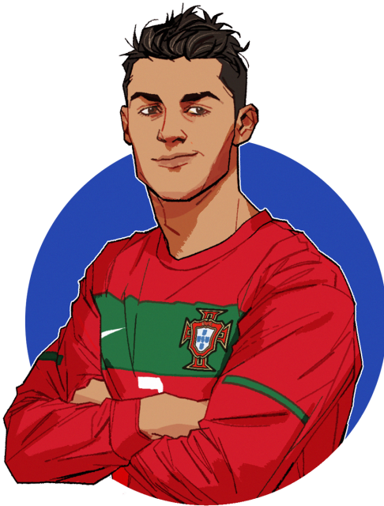
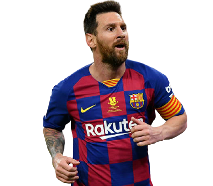

Cristiano Ronaldo is a Portuguese professional footballer who plays as a forward for Premier League club Manchester United and captains the Portugal national team.(born February 5, 1985, Funchal, Madeira, Portugal), Portuguese football (soccer) forward who was one of the greatest players of his generation.Ronaldo’s father, José Dinis Aveiro, was the equipment manager for the local club Andorinha. (The name Ronaldo was added to Cristiano’s name in honour of his father’s favourite movie actor, Ronald Reagan, who was U.S. president at the time of Cristiano’s birth.) At age 15 Ronaldo was diagnosed with a heart condition that necessitated surgery, but he was sidelined only briefly and made a full recovery.
more about me

Lionel Messi is a soccer player with FC Barcelona and the Argentina national team. He has established records for goal scored and won individual awards en route to worldwide recognition as one of the best players in soccer.Messi was born on June 24, 1987, in Rosario, Argentina. As a young boy, Messi tagged along when his two older brothers played soccer with their friends, unintimidated by the bigger boys. At the age of 8, he was recruited to join the youth system of Newell's Old Boys, a Rosario-based club.
more about meThe 2018 FIFA World Cup Final was the final match of the 2018 World Cup, the 21st edition of FIFA's competition for national football teams. The match was played at the Luzhniki Stadium in Moscow, Russia, on 15 July 2018, and was contested by France and Croatia
The 2014 FIFA World Cup Final was the final match of the 2014 World Cup, the 20th edition of FIFA's competition for national football teams. The match was played at the Maracanã Stadium in Rio de Janeiro, Brazil, on 13 July 2014, and was contested by Germany and Argentina.
The 2010 FIFA World Cup Final was the final match of the 2010 World Cup, the 19th edition of FIFA's competition for national football teams. The match was played at Soccer City in Johannesburg, South Africa, on 11 July 2010, and was contested by the Netherlands and Spain.